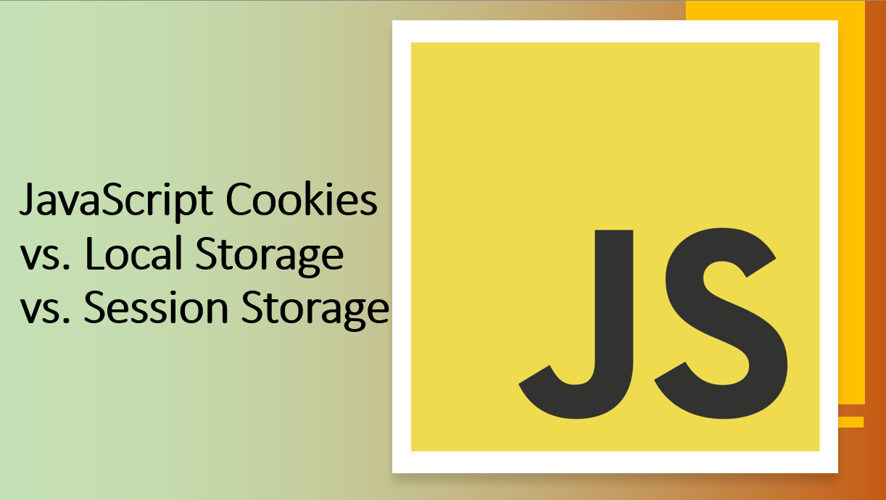

Introduction​
When it comes to storing data on the client side in JavaScript, there are several options available, each with its own use cases and considerations.
In this guide, we'll compare JavaScript cookies, local storage, and session storage, helping you understand when to use each one and the advantages they offer.
Let's get started!
Suggested Tutorials 📑:​
1. JavaScript Cookies​
JavaScript cookies are small pieces of data that are stored as text files on a user's computer. Cookies are created when a user's browser loads a particular website. The website sends information to the browser, which then creates a text file. Every time the user goes back to the same website, the browser retrieves and sends this file to the website's server. Cookies are used for several purposes, including authentication, session tracking, and storing information about the user's preferences or browsing history.
1.1. Creating a Cookie​
To create a cookie, we use the document.cookie property. This property is used to both create and read cookies.
Let's create a cookie named username with the value John Doe:
document.cookie = "username=John Doe";
1.2. Reading a Cookie​
To read a cookie, we can simply access the document.cookie property:
const cookieValue = document.cookie;
console.log(cookieValue);
Suggested Tutorials 📑:​
1.3. Setting Cookie Expiration​
By default, cookies are deleted when the browser is closed. However, we can set an expiration date for a cookie, after which the cookie will be deleted. To do this, we use the expires property:
const date = new Date();
date.setTime(date.getTime() + 1000 * 60 * 60 * 24 * 7);
document.cookie = `username=John Doe; expires=${date.toUTCString()}`;
1.4. Setting Cookie Path​
By default, cookies are available to all pages on a website. However, we can set a path for a cookie, after which the cookie will only be available to pages within that path. To do this, we use the path property:
document.cookie = `username=John Doe; path=/`;
1.5. Setting Cookie Domain​
By default, cookies are available to all subdomains on a website. However, we can set a domain for a cookie, after which the cookie will only be available to pages within that domain. To do this, we use the domain property:
document.cookie = `username=John Doe; domain=example.com`;
Suggested Tutorials 📑:​
1.6. Setting Cookie Secure Flag​
By default, cookies are sent to the server with every HTTP request. However, we can set the secure flag for a cookie, after which the cookie will only be sent to the server with an encrypted request over the HTTPS protocol. To do this, we use the secure property:
document.cookie = `username=John Doe; secure`;
1.7. Setting Cookie SameSite Flag​
By default, cookies are sent to the server with every HTTP request. However, we can set the SameSite flag for a cookie, after which the cookie will only be sent to the server with a same-site request. To do this, we use the SameSite property:
document.cookie = `username=John Doe; SameSite=Strict`;
1.8. Deleting a Cookie​
To delete a cookie, we can set its expiration date to a date in the past:
document.cookie = `username=John Doe; expires=Thu, 01 Jan 1970 00:00:00 UTC;`;
Suggested Tutorials 📑:​
2. Local Storage​
Local storage is a type of web storage that allows us to store data in the browser with no expiration date. This means the data will persist even after the browser window is closed. Local storage is similar to session storage, except that data stored in local storage has no expiration date, while data stored in session storage gets cleared when the page session ends.
2.1. Creating a Local Storage Item​
To create a local storage item, we use the localStorage.setItem() method. This method takes two parameters: the name of the item and its value.
Let's create a local storage item named username with the value John Doe:
localStorage.setItem("username", "John Doe");
2.2. Reading a Local Storage Item​
To read a local storage item, we use the localStorage.getItem() method. This method takes one parameter: the name of the item.
Let's read the username local storage item:
const username = localStorage.getItem("username");
console.log(username);
Suggested Tutorials 📑:​
2.3. Updating a Local Storage Item​
To update a local storage item, we use the localStorage.setItem() method. This method takes two parameters: the name of the item and its value.
Let's update the username local storage item:
localStorage.setItem("username", "Jane Doe");
2.4. Deleting a Local Storage Item​
To delete a local storage item, we use the localStorage.removeItem() method. This method takes one parameter: the name of the item.
Let's delete the username local storage item:
localStorage.removeItem("username");
2.5. Clearing All Local Storage Items​
To delete all local storage items, we use the localStorage.clear() method:
Suggested Tutorials 📑:​
3. Session Storage​
Session storage is a type of web storage that allows us to store data in the browser with an expiration date. This means the data will persist until the browser window is closed. Session storage is similar to local storage, except that data stored in session storage gets cleared when the page session ends, while data stored in local storage has no expiration date.
3.1. Creating a Session Storage Item​
To create a session storage item, we use the sessionStorage.setItem() method. This method takes two parameters: the name of the item and its value.
Let's create a session storage item named username with the value John Doe:
sessionStorage.setItem("username", "John Doe");
3.2. Reading a Session Storage Item​
To read a session storage item, we use the sessionStorage.getItem() method. This method takes one parameter: the name of the item.
Let's read the username session storage item:
const username = sessionStorage.getItem("username");
console.log(username);
3.3. Updating a Session Storage Item​
To update a session storage item, we use the sessionStorage.setItem() method. This method takes two parameters: the name of the item and its value.
Let's update the username session storage item:
sessionStorage.setItem("username", "Jane Doe");
Suggested Tutorials 📑:​
3.4. Deleting a Session Storage Item​
To delete a session storage item, we use the sessionStorage.removeItem() method. This method takes one parameter: the name of the item.
Let's delete the username session storage item:
sessionStorage.removeItem("username");
3.5. Clearing All Session Storage Items​
To delete all session storage items, we use the sessionStorage.clear() method:
Suggested Tutorials 📑:​
Conclusion​
In this guide, we explored the fundamentals of JavaScript cookies, local storage, and session storage. We saw how to create, read, update, and delete cookies, local storage items, and session storage items. We also saw how to set expiration dates for cookies and how to set paths, domains, and flags for cookies.
To learn more about cookies, local storage, and session storage, check out the following resources:
Happy coding! 🎉